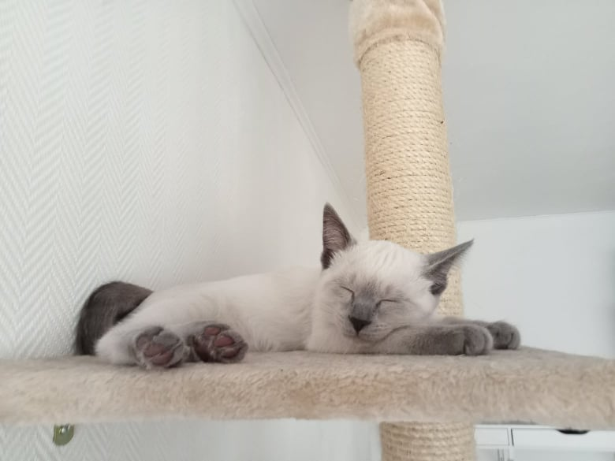
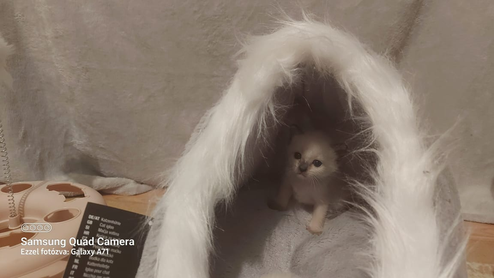
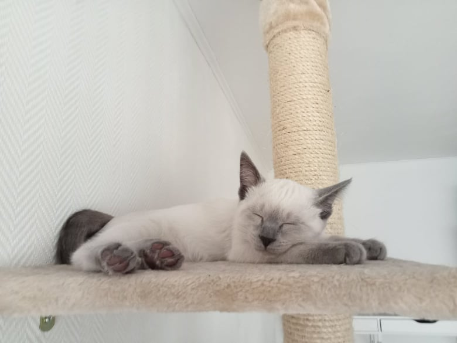
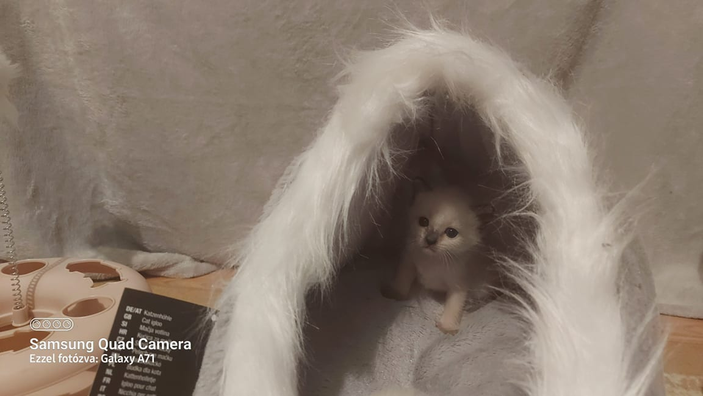
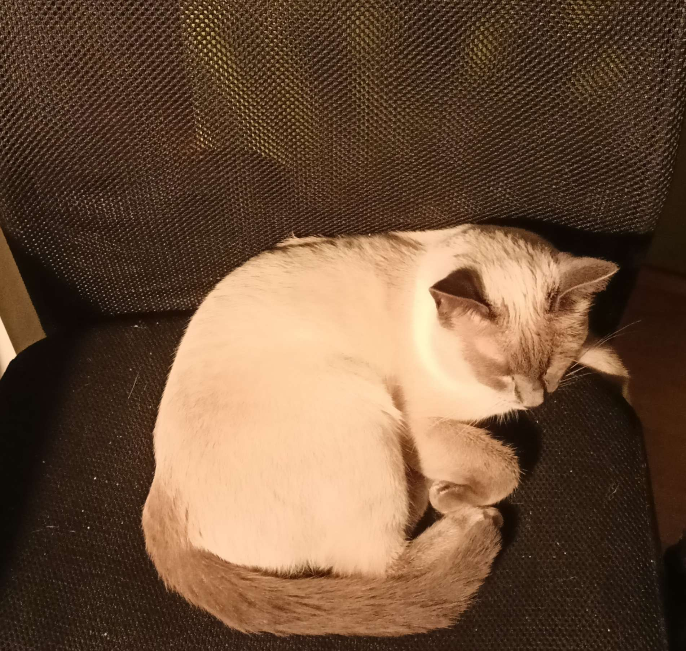
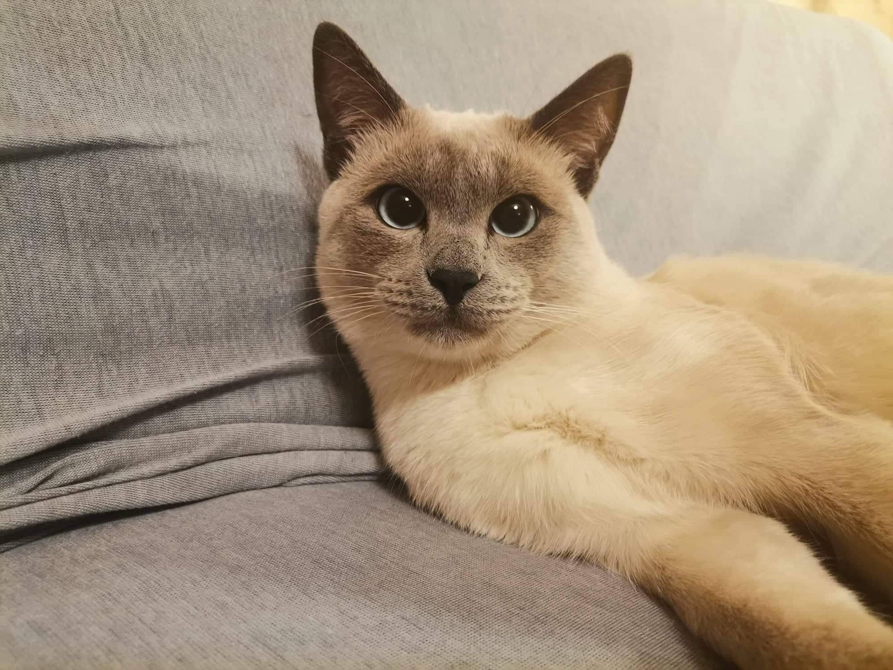

Nekem van egy kék sziámi macskám, a neve Aramis.
2022 tavaszán érkezett meg hozzánk a szaporítótól három hónaposan. Mindigis kiváncsi volt, habár kissé félénk. Ez a kiváncsisága az idő elteltével egyre erősebbé, és erősebbé vált. Nagyon kedves állat, kifejezetten szereti az embereket és a maga módján sokat „társalog” velünk. Ez az egész fajtájára jellemző ezért általában olyan gazdáknak ajánlják, akik sokat tudnak foglalkozni a macskájukkal. A sziámi macskák az egyik legaktívabbak a világon a cica fajták közül! A másik kedvenc elfoglaltsága a focizás. A legjobban a pattanó gumilabdákat szereti üldözni körbe az egész lakásban. Nappal sokat alszik, de éjszaka felélénkül. A fajta másik jellemzője, hogy ezek a macskák jellemzően sokáig élnek, akár a 20 éves kort is megérhetik egyes példányok.
Tulajdonságai
A szürke foltjai hidegebb időjárásban sötétebbé válnak
 



Etetése
Válogatós, és a gazdájához(hugomhoz) hasonlóan az ő ízlése is gyorsan változik. Leginkább azokat a macskaételeket szereti, amik halas ízesítésűek. Nagyon szereti a lazacot, a tonhalat a tőkehalat és a csirkehúst is. Nagyon kevés vizet iszik, ritkán egy pár lefetyelést esetleg. A tejet egyáltalán nem szereti és nem is szokott kapni.
| étel | csemege |
|---|---|
| Felix | Purizone |
| Cosma |
Tisztántartása
Nem nagyon látjuk értelmét mosni, tisztogatja ő magát. Fésülni azért néha meg kell és a karmait is érdemes levágni.
Nevelése
A viselkedése általánosságban kitűnő, ámbár játékos kedvében kissé agresszívvá tud válni. Karmait, ha látja, mit támad ritkán használja. Mostanában szokása ellopnia a székemet. Nagyon okos fajta, meg lehet tanítani trükkökre és akár apportírozni is, habár mi őt semmire nem tanítottuk még be.
Melegebb időjárásban levisszük a közeli parkba, hogy ott fedezzen fel egy keveset.
Megfelelő tartási körülményei
 A lakásunkon belül szabadon mozoghat, mégha ez egyes dolgok ép állapotára nincs annyira jó hatással. Az erkélyre, mióta rájött egy módra, hogy kijusson a macskahálón kívülre, ritkán van kiengedve. Néha kiszökik az előtérbe, ha valaki kinyitja az ajtót, mely esetben hagyjuk egy kicsit vándorolni ott..